CS180 Project 3
Face Morphing
Kevin Yee
Overview
So in this project, the endgoal is to basically mess with people's faces. (In the never ending persuit to bend each pixel's will to my own)
Part 1: Defining Correspondences
So the first thing I did was define matching points (or correspondences) in order to define keypoints for the morph sequence. Eyes to eyes, mouth to mouth, etc. I used the provided tool to do this. I then computed the Delaunay triangluation of the mean by using scipy.spatial import Delaunay
Quick sidenote, I am not George Clooney or Brad Pitt, however, I very much dislike taking images of myself for privacy reasons.
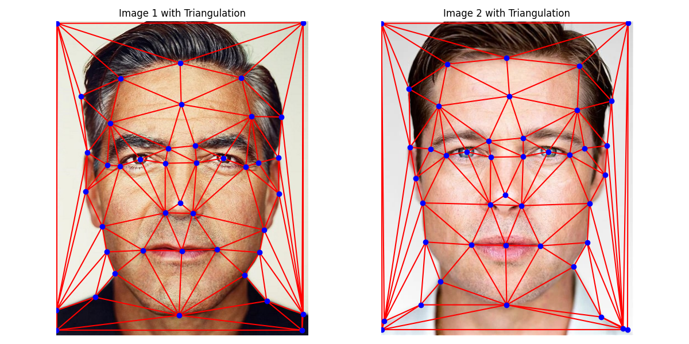Part 2: Computing the "Mid-Way Face"
So the instructions basically broke things down into: Compute Average Shape; Warp Both Faces into Average Shape with Affine Transformations; Blend Colors of Both Faces to Produce Final Mid-Way Face
Computing the average was easy enough, just take both points, add together and divide by two. Then the Delaunay is calculated using the function.
Next is the affine tranformation, which was done by creating an affine transformation matrix that mapped the triangle in the original image to the average shape one. This was done by filling out the suggested function, computeAffine(tri1_pts, tri2_pts)
to fill out the affine function, it's basically the standard affine transformation matrix over a whole bunch of points, or six systems of linear equations cleverly placed and then solved using np.linalg.solve(A,b) this function is applied to every triangle in the original image which warps it from the first -> second face.
After both faces are warped to the average shape, the last step is to blend the pixel values to produce the mid-way face. For every pixel inside the triangles, the average of the corresponding pixel values is taken.
Part 3: The Morph Sequence
Now, for the morph sequence, for each frame it's basically the same thing as getting the mid-way face (average shape, warp both, average colors), but it's per-frame.

Part 4: The "Mean Face" of a Population
I used the FEI dataset, and I chose the subset of the population that had a neutral expression. The Danes set seemed to be broken, and I didn't really feel like annotating and hand-picking all of individuals of a certian group one by one, since that's quite a lot of work. To find the mean, what I did was to basically: compute the average shape in a similar manner to what I did for Part 2; morph all of the faces into the mean shape; accumulate the faces; and then average them
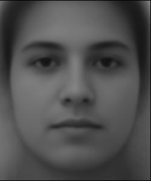Here's the true mean shape:
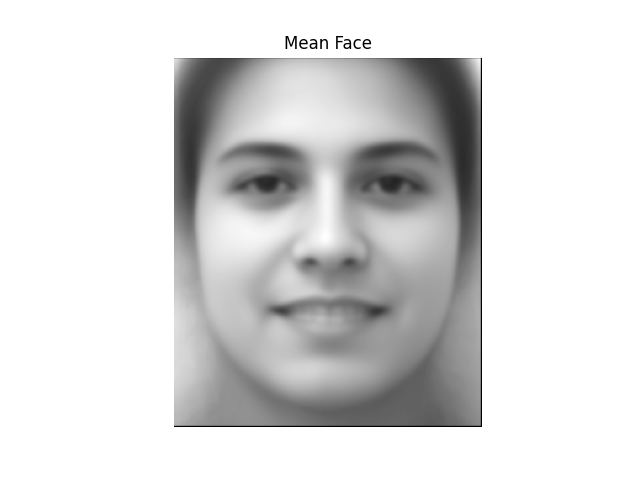Some example gifs of the faces in the dataset being morphed into the average shape, both neutral and smiling (looks kinda awk in some of them)
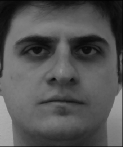 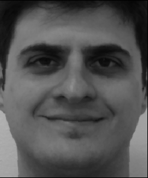 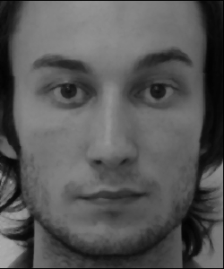 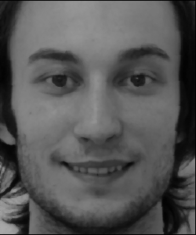 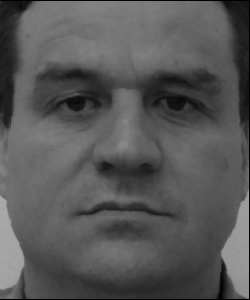 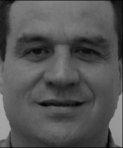 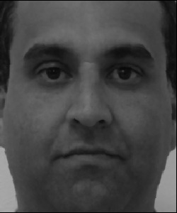 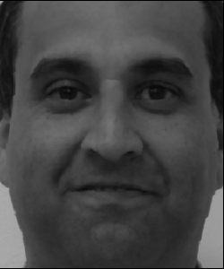 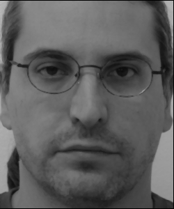 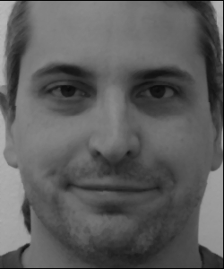And an example of the mean being warped to someone else's geometry:
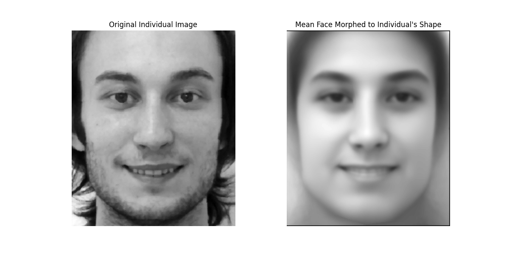Part 5: Caricatures: Extrapolating From the Mean
Caricatures were created by doing something like so: getting the points of the individual and subtracting the mean shape, followed by adding this to the mean shape, multiplied by a factor of two, to have twice their "presence" in the image so to speak. A standard morph later, and we have 2x the presence of their face in their face. See result.
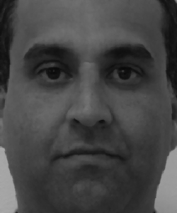 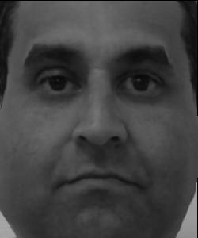Individual #4's pronounced cheeks I suppose round eyes show quite well though here, so I guess that would be a caricature of him.
Bells & Whistles: Keanu Over Time:
I still don't want to use photos of myself since that makes me very very uncomfortable, I found 30 images of Keanu Reeves throughout time and made a morph sequence of them.